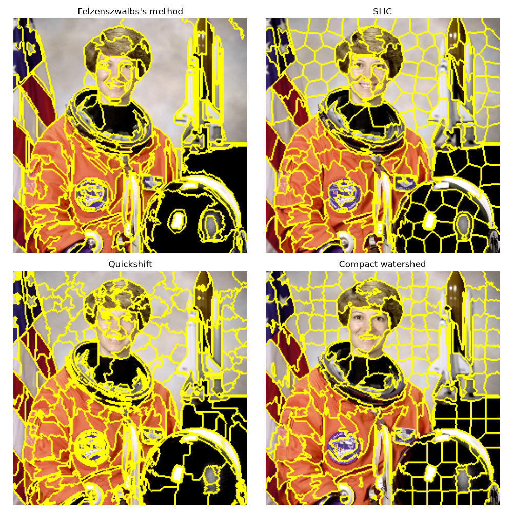

Note
Go to the end to download the full example code or to run this example in your browser via Binder
Comparison of segmentation and superpixel algorithms#
This example compares four popular low-level image segmentation methods. As it is difficult to obtain good segmentations, and the definition of “good” often depends on the application, these methods are usually used for obtaining an oversegmentation, also known as superpixels. These superpixels then serve as a basis for more sophisticated algorithms such as conditional random fields (CRF).
Felzenszwalb’s efficient graph based segmentation#
This fast 2D image segmentation algorithm, proposed in [1] is popular in the
computer vision community.
The algorithm has a single scale parameter that influences the segment
size. The actual size and number of segments can vary greatly, depending on
local contrast.
Quickshift image segmentation#
Quickshift is a relatively recent 2D image segmentation algorithm, based on an approximation of kernelized mean-shift. Therefore it belongs to the family of local mode-seeking algorithms and is applied to the 5D space consisting of color information and image location [2].
One of the benefits of quickshift is that it actually computes a hierarchical segmentation on multiple scales simultaneously.
Quickshift has two main parameters: sigma controls the scale of the local
density approximation, max_dist selects a level in the hierarchical
segmentation that is produced. There is also a trade-off between distance in
color-space and distance in image-space, given by ratio.
SLIC - K-Means based image segmentation#
This algorithm simply performs K-means in the 5d space of color information and
image location and is therefore closely related to quickshift. As the
clustering method is simpler, it is very efficient. It is essential for this
algorithm to work in Lab color space to obtain good results. The algorithm
quickly gained momentum and is now widely used. See [3] for details. The
compactness parameter trades off color-similarity and proximity, as in the
case of Quickshift, while n_segments chooses the number of centers for
kmeans.
Compact watershed segmentation of gradient images#
Instead of taking a color image as input, watershed requires a grayscale gradient image, where bright pixels denote a boundary between regions. The algorithm views the image as a landscape, with bright pixels forming high peaks. This landscape is then flooded from the given markers, until separate flood basins meet at the peaks. Each distinct basin then forms a different image segment. [4]
As with SLIC, there is an additional compactness argument that makes it harder for markers to flood faraway pixels. This makes the watershed regions more regularly shaped. [5]

Felzenszwalb number of segments: 194
SLIC number of segments: 196
Quickshift number of segments: 695
Watershed number of segments: 256
import matplotlib.pyplot as plt
import numpy as np
from skimage.data import astronaut
from skimage.color import rgb2gray
from skimage.filters import sobel
from skimage.segmentation import felzenszwalb, slic, quickshift, watershed
from skimage.segmentation import mark_boundaries
from skimage.util import img_as_float
img = img_as_float(astronaut()[::2, ::2])
segments_fz = felzenszwalb(img, scale=100, sigma=0.5, min_size=50)
segments_slic = slic(img, n_segments=250, compactness=10, sigma=1, start_label=1)
segments_quick = quickshift(img, kernel_size=3, max_dist=6, ratio=0.5)
gradient = sobel(rgb2gray(img))
segments_watershed = watershed(gradient, markers=250, compactness=0.001)
print(f'Felzenszwalb number of segments: {len(np.unique(segments_fz))}')
print(f'SLIC number of segments: {len(np.unique(segments_slic))}')
print(f'Quickshift number of segments: {len(np.unique(segments_quick))}')
print(f'Watershed number of segments: {len(np.unique(segments_watershed))}')
fig, ax = plt.subplots(2, 2, figsize=(10, 10), sharex=True, sharey=True)
ax[0, 0].imshow(mark_boundaries(img, segments_fz))
ax[0, 0].set_title("Felzenszwalbs's method")
ax[0, 1].imshow(mark_boundaries(img, segments_slic))
ax[0, 1].set_title('SLIC')
ax[1, 0].imshow(mark_boundaries(img, segments_quick))
ax[1, 0].set_title('Quickshift')
ax[1, 1].imshow(mark_boundaries(img, segments_watershed))
ax[1, 1].set_title('Compact watershed')
for a in ax.ravel():
a.set_axis_off()
plt.tight_layout()
plt.show()
Total running time of the script: (0 minutes 2.481 seconds)